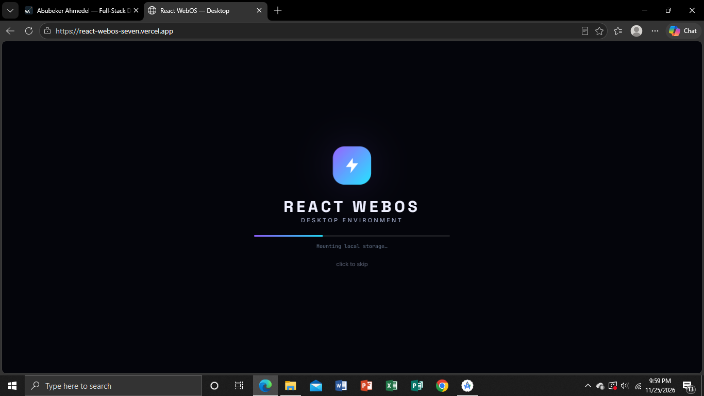
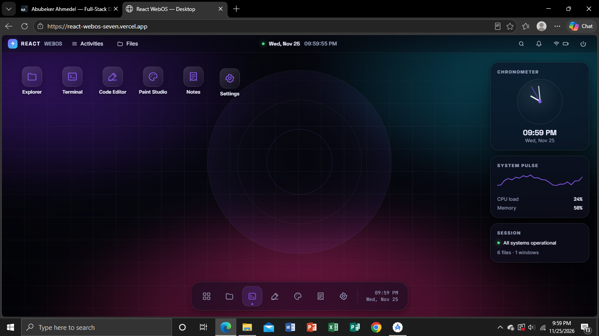
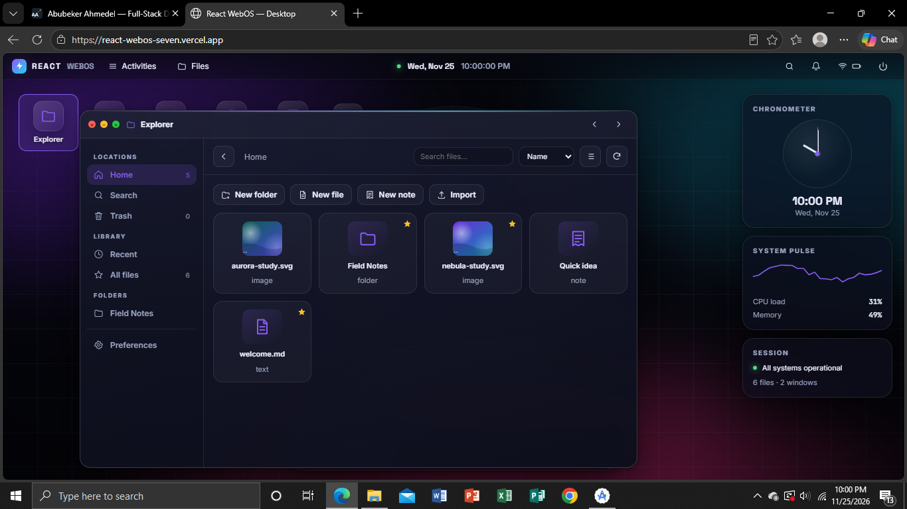
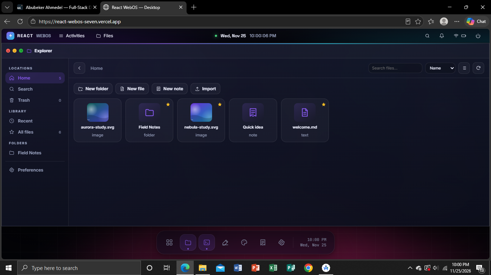
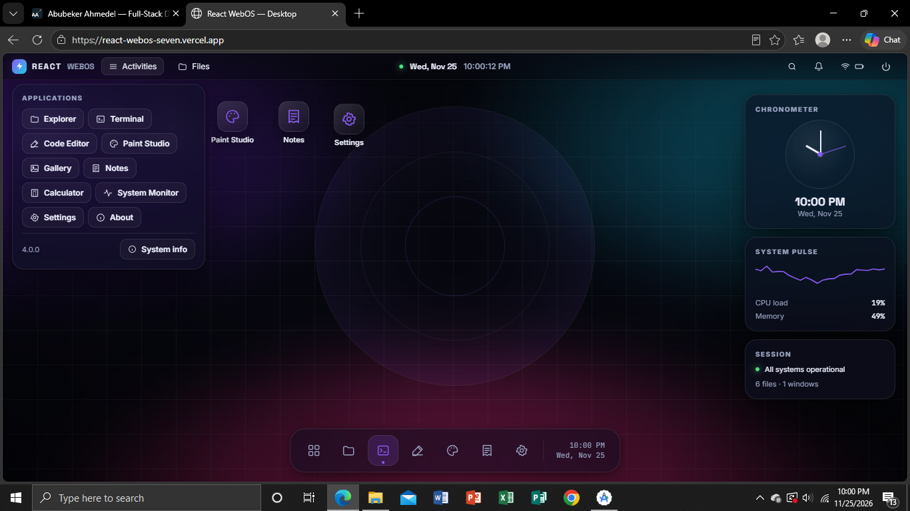
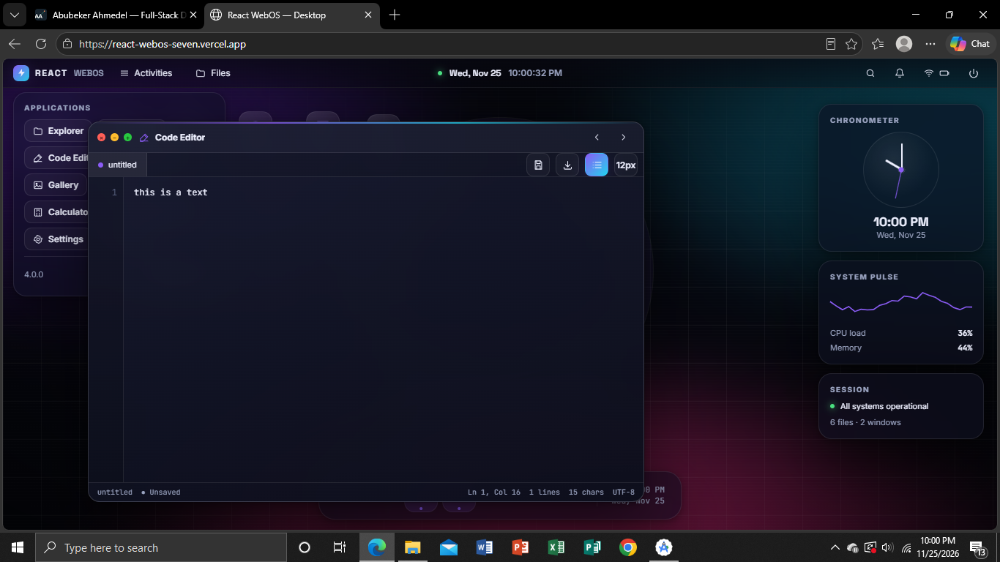
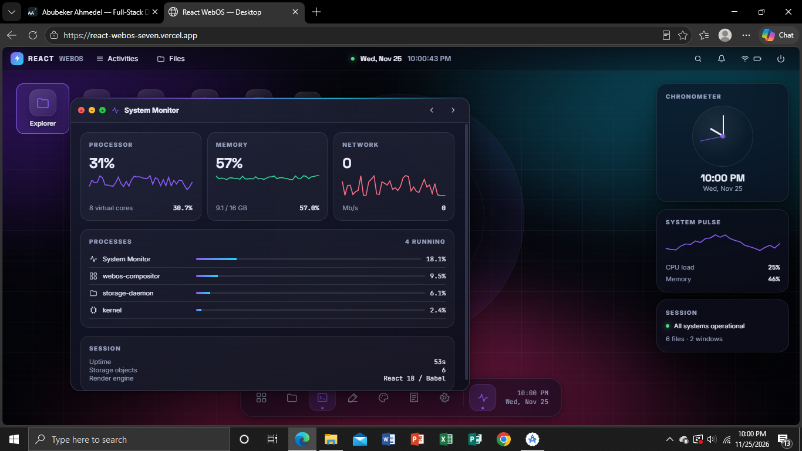
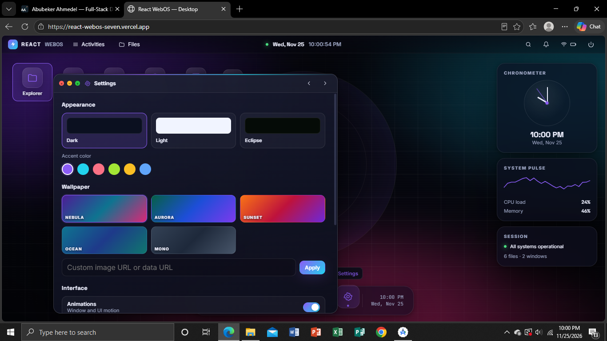

React WebOS
A desktop environment inside the browser: draggable windows, a dock and small apps. Each window owns its state while the desktop manages focus and layering.
- Role
- Personal project — UI architecture and interactions
- Platform
- Browser
- Stack
- React, JavaScript, CSS
- Status
- Live demo, video and source available
01Project overview
React WebOS simulates a desktop in a web page. It has a dock, draggable windows and a few small apps. The interesting part is not the visual theme but the state model: each window keeps its own state, while the desktop tracks which window is focused and which one sits on top.
02The real problem
I wanted to practise React state management and CSS layout by building something visual and interactive. A desktop metaphor is a useful exercise because several state concerns overlap: drag position, focus, stacking order and app-local state all change independently but affect the same screen.
03Target users and their needs
- Visitors who want to explore a desktop-like interface directly in a browser tab.
- They need windows to open, move and come to the front in a way that matches desktop intuition.
- They should not need an account or installation to try it.
- For me: a playground for component boundaries and interaction state.
04System architecture
05Technology selection and justification
- React makes the component boundary between desktop, window and app explicit.
- Local component state keeps each app self-contained instead of pushing every detail into a global store.
- Lifted desktop state handles the few things that must be shared: focus and stacking order.
- CSS handles positioning and layout, keeping visual rules out of JavaScript where possible.
06Data model
There is no database. The only state is UI state: which windows exist, where they sit, which is focused, and whatever each small app keeps locally. I have not described persistence, so I will not claim that a desktop layout survives a reload.
Desktop state
Window collection, focus and stacking order.
Window state
Position and drag interaction for each window.
App state
Local state owned by the app inside a window.
Persistence
None described; no database or storage layer is part of this project.
07API documentation
Not applicable. React WebOS has no server or API; it runs entirely in the browser.
08Authentication and authorization
Not applicable. There are no accounts, sessions or permissions in this project, and the demo opens without registration.
09Screenshots of the application








10Live demonstration
The demo is hosted on Vercel and opens immediately in a browser. A short walkthrough video covers the window interactions.
Open React WebOS in the browser ↗ Watch the walkthrough ↗11Source-code repository
The React components, desktop state and CSS are in the GitHub repository.
Open React WebOS on GitHub ↗12Testing methodology and results
No automated interaction test report is published. Drag and focus behaviour is the part I would test first if I formalised this project, but I am not claiming a suite exists today.
13Performance measurements
I have not published Lighthouse results or interaction latency figures for this demo, so none are shown.
14Security considerations
The app has no backend, no accounts and no described collection of user data, so its security surface is small. It does not handle credentials or payments. I would not describe it as a security-focused project; the interesting engineering here is in state and interaction design.
15Difficult technical challenges
Focus and layering were the hard parts. Clicking a window must raise it above the others, and the active window must be obvious without constantly re-rendering everything. Drag interactions add a stream of position updates, so deciding which state belongs in the window and which belongs in the desktop was the design question that shaped the component tree.
16Engineering trade-offs
- Per-window state: self-contained apps, in exchange for careful prop boundaries when the desktop needs information.
- Lifted focus and z-index: one source of truth for stacking, in exchange for a slightly more complex desktop component.
- CSS layout: browser-native positioning, in exchange for handling drag coordinate logic in JavaScript.
- No persistence: simpler state model, in exchange for losing the desktop arrangement on reload.
17Known limitations
- No persistence of window layout.
- No server, API or accounts by design.
- No published tests or performance measurements.
- Desktop-style interactions may not translate well to small touch screens.
18Future development roadmap
Possible improvements, not commitments:
- Add keyboard controls for focusing and moving windows.
- Persist the desktop layout locally so a reload restores it.
- Adapt window management for touch input and small screens.
- Add interaction tests for drag, focus and stacking.
19Outcomes and measurable results
The demo plus walkthrough are public. The result I can verify is a working desktop metaphor with draggable windows, focus and layering implemented in React state. I have not measured engagement or performance, so no such numbers are claimed.
20My contribution
I built React WebOS as a personal project: the desktop shell, window manager behaviour, small apps and styling. There was no team or external contributor, and this account stays with what I actually implemented.